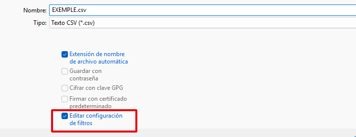

Gesti√≥ de cursos en Gesform¶
En aquest tutorial expliquem tot allò que estpa relacionat amb Gesform i la gestió de cursos. És important que seguiu els passos indicats per tal de no tindre problemes a l'hora de gestionar les formacions.
Voreu que al llarg del procés de vida d'una formació caldrà que vingueu ací per a consultar el procediments corresponent.
Com crear un curs nou¶
Qual volem crear una formació nova podem: - duplicar una formació semblant - o crear una des de zero
Duplicar una formaci√≥¶
Per a duplicar una formació, obrim una semblant a la que vullguem, anem al menu extintor i polsem "Duplicar edición"
Atenció
Quan dupliquem la formació, ens donarà el codi de la formació duplicada, hem d'anotarlo en algún lloc per a després buscar-la, ja que eixa formació encara no estarà asignada a nosaltres.
Una vegada accedim a ella haruem de canviar el títol i totes les dades que no siguen iguals.
Crear una formaci√≥ desde zero¶
Si comencem a crear l'edició des de cero cal:
Anar a Mis Ediciones -- Ver
Anem al tercer icono Añadir nuevo Registro
Omplir dades de la formaci√≥¶
- Tingueu en compte la família profesional quan poseu el codi i que coincidisca amb la família profesional de la formació.
- ⚠️ Respecteu les NORMES D'ESTIL que marca la Subdirecció General de Formació del Professorat. Les podeu trobar ací: Normes d'estil.
Caldrà omplir les següents dades de la formació:
- Fitxa del curs
- Caracterítiques del curs
- Afegir el ponent a la formació
- Omplir el pressupost de la formació
- Demanar espai en Aules
FITXA DEL CURS¶
La fitxa del curs es la següent i caldrà omplir els diferents camps que pots vore a continuació:
-
Convocatòria - Cal escollir una convocatòria segons el tipus de formació que es vol realitzar:
- FSE 2025
- PAA + període en què es realitza la formació (per exemple: PAA Setembre-Desembre 2025)
- Skills 2025
- Competència Digital
- Administracions Públiques
-
Acción Formativa - "Percha" - Mirar de les diferents perxes quina s'adapta més a la nostra formació.
-
Delegación - CEFIRE de Formació Professional i ERE
-
Titulo: Títol del Curs
-
Área
Important
Tingueu en compte la família profesional quan poseu el codi i que coincidisca amb la família profesional de la formació.
- Tipo de acción
- Presencial: La formació es realitza completament en un lloc físic, amb interacció directa entre el professorat i les persones participants. Després en Gesform en el apartat Lloc de realització hi ha que indicar la ubicació física d'on es fa (p. ex. Universitat d’Alacant)
- A distància: La formació es du a terme de manera en línia (síncrona o asíncrona), sense necessitat d’assistir físicament. Després en Gesform en el apartat Lloc de realització hi ha que possar ADIST.
- Semipresencial: És una formació que combina sessions presencials (on l’alumnat i el professorat coincideixen en un lloc físic) amb activitats/sessions a distància (síncrones o asíncrones). Després en Gesform en el apartat Lloc de realització hi ha que possar ADIST.
Observacions
En observacions es podrà explicar si les sessions són síncrones i/o asíncrones i tot allò que es considere rellevant.
-
Nivell -- CF (En el cas que siga de formació professional)
-
Horas de duración
-
Plazas (nombre de places que s'oferten)
-
Lugar Realización
- Si el curs és Presencial hi ha que indicar la ubicació física d'on es fa (p. ex. Universitat d’Alacant)
- Si el curs és A distància hi ha que possar ADIST.
- Si el curs és Semipresencial hi ha que possar ADIST.
Observacions
En observacions es podrà explicar si les sessions són síncrones i/o asíncrones i tot allò que es considere rellevant.
-
Fecha inicio y fin de la formació
-
Dates inscripción inicio i fin, confirmación (final), despublicar (dos setmanes després de començar)
Important
Basant-se en les dates d'inscripció inici i fi... es recomana que com a mínim hi haja 1 mes d'inscripció, 1 setmana de confirmació i despublicar dos setmanes després de començar la formació.
A continuació Aplicar per tal que aparega marcat la X en perfil i obtindrem el codi de referència.
CARACTER√çSTIQUES DEL CURS¶
Ara caldrà introduir les característiques del curs. En la icona que hi ha al costat de la X del perfil i triar l'opció Mantenimento
IMPORTANT
- Este pas és extremadament important, cal vore una X en el perfil, si no apareix la X i modifiques alguna cosa estaràs modificant totes les formacions del CEFIRE que "perxen" d'eixa formació i crearàs un desastre monumental.
- Respecteu les normes d'estil que marca la Subdirecció General de Formació del Professorat.
- Cal eliminar tot text en html, més enllà de l'especificat per a afegir l'imatge del fons social europeu. Utilitzeu de base la formació 19FP43CF144 (Didàctica).
Omplim la informació referent al curs. Objectius, Continguts, Material didàctic, Condicions, Observacions, Dirigit a.
OBJECTIUS: Objectius que es pretenen aconseguir en el curs. Ens els haurà passat el ponent.
CONTINGUTS: Continguts que es treballaran al curs. Ens els haurà passat el ponent.
MATERIAL DIDÀCTIC: Ens els haurà passat el ponent. Si el curs és online a AULES caldria posar:
El curs es realitzarà en línia a través de la plataforma d'aula virtual de formació del professorat, on s'allotjaran els materials i es realitzaran les activitats.
En cas contrari, s'haurà d'inidcar el material necessari.
CONDICIONS: El text de les condicions varia en funció de la campanya de la formació (FSE, Skills, PAA), en els enllaços de més avall podem trobar el text que caldrà possar, segon la campanya.
OBSERVACIONS: Es detallen les especificitats en el calendari, sessions síncrones, asíncrones, materials, etc. El text de les observacions varia en funció de la campanya de la formació (FSE, Skills, PAA), en els enllaços de més avall podem trobar el text que caldrà possar, segon la campanya.
DIRIGIT A: Es detallen en cas que les activitats de formació estiguen destinades a professorat d'etapes determinades o col·lectius específics.
Important
Cal cambiar la família d'informàtica i comunicacions per la que corresponga a la formació que es va a validar.
Valencià
Personal docent i personal tècnic educatiu amb destinació en centres educatius no universitaris de la Comunitat Valenciana en els quals s'impartisquen els ensenyaments regulats per la Llei orgànica d'Educació
Personal docent i personal tècnic educatiu que preste servicis tècnics de suport educatiu als centres indicats en l'apartat anterior
Personal que haja finalitzat els graus i màster que conduïxen a l'obtenció de la titulació docent, sempre que es troben inscrits en alguna de les bosses de personal docent de la Conselleria d'Educació, Universitats i Ocupació i este personal no supose més del 50% de participació en l'activitat
REQUISITS ESPECÍFICS
<b>Professorat de Formació Professional de la Família d'Informàtica i Comunicacions</b>
Personal docente y personal técnico educativo con destino en centros educativos no universitarios de la Comunitat Valenciana en los que se impartan las enseñanzas reguladas por la Ley Orgánica de Educación
Personal docente y personal técnico educativo que presta servicios técnicos de apoyo educativo en los centros indicados en el apartado anterior
Personal que haya finalizado los grados y máster que conducen a la obtención de la titulación docente, siempre que se encuentran inscritos en alguna de las bolsas de personal docente de la CConselleria d'Educació, Universitats i Ocupació y este personal no suponga más del 50% de participación en la actividad
REQUISITOS ESPECÍFICOS
<b>Profesorado de Formación Profesional de la Familia de Informática y Comunicaciones</b>
IMAGEN PORTADA: En este apartat, cal pujar el banner que hem creat per al curs. El format de la image ha de ser .png, i el nom de l'arxiu ha de ser 1.png per a valencià i 2.png per a castellà. Els bàners ja no s'afegixen amb codi html, caldrà que afegir l'imatge directament la fitxa de la formació.

Per a pujar un baner cal fer clic sobre el botó de pujar fitxer, seleccionar la imatge i fer clic a "pujar fitxer" (és el botó blau)
Crear Banner
Podeu utilitzar el següent enllaç per a crear un banner (només formacions online de moment): Banners
I apliquem i aceptem.
AFEGIR PONENT A LA FORMACI√ì¶
També hem d'afegir al ponent, per a afegir-lo haurem d'anar al menú Extintor - Participantes edición
Després polsem añadir nuevo registro
I omplirem els següents camps:
- Persona.- Posarem el DNI del ponent, si està donat d'alta en el sistema apareixerà el seu nom. Si no apareix el seu nom significa que no está donat d'alta, i per tant, hauren de sol·licitar que el donen de alta omplint el següent document i enviar-lo per mail a compte_formacio@gva.es.
- Tipo.- Indicarem el tipus (Assisten, Coordinador, Ponent,...)
- Hores d'assitència.- Cal indicar les hores que farà el ponent.
- Derecho Certificado.- Posarem SI, si s'ha de certificar al ponent.
Més d'un ponent
Si tenim més d'un ponent, caldrá introduïr-los a tots indicant les hores s'assitència de cadascun, i si tenen dret a certificat.
PRESSUPOST¶
Per últim abans de portar a validar per part del director anem a la icona que hi ha al costat de Apuntes
I triem l'opció Presupuesto
Afegim nou registre i omplim la informació
Codis
- Código: 226.06 Gastos diversos, Reuniones, conferencias, celebración de actos y cursos (personal no docente)
- Código: 233.02 Gastos de formación del personal docente
- Importe: Import que es preveu gastar en la formació.
- Descripción: Breu descripció del curs i de les seues característiques (tarifa aplicada)
I Apliquem i Acceptem.
Finalment, revisem bé la informació introduida y PASSEM EL CURS A PROPOSTA.
Els problemes més comuns que ens solem trobar són
- Assegureu-se que la formació no té cap error d'ortografia, tant en el títol com en la descripció.
- Assegureu-se que heu afegit correctament la imatge correcta de la formació i que algun company l'ha validada correctament.
- El pressupost té que estar correctament especificat.
- No hi ha que posar centre coordinador mai.
- Heu de deixar al menys una setmana per a confirmar la formació.
- Reviseu bé les tarifes de la fitxa econòmica. Tarifes 2025..
- I el corresponent ANNEX. Annex Tarifes 2025..
Traduccions
Per a les traduccions Podeu utilitzar ferramentes com Salt (1) o Appertium per a revisar l'ortografia i la gramàtica de la formació.
Sempre és recomanable utilitzar SALT abans que Appertium, Salt està basat en Appertium, els resultats seran semblants.
Per a passar el curs a PROPOSTA. Seleccionem de la lista deplegable "proposta" y "APLIQUEM Y ACEPTEM".
Important
Una vegada estiga el curs és important que poseu en Kanban el curs per a que siga validat per part del director. Si no es posa en Kanban no es podrà validar.
Demanar espai en aules¶
Una vegada estiga validat el curs tant per part del director com per part de la SDGFP, ja es podrà publicar i començar a gestionar les inscripcions. No em d'oblidar que si el curs és online a AULES caldrà demanar l'espai en AULES.
Passar a confirmar un curs i barem¶
Una vegada finalitzat el període de d'inscripció cal ordenar als participants per passar el curs a confirmació.
Anar a Mis Ediciones -- Ver -- Extintor - Gestión solicitud de participants
Treballarem en la pantalla que apareix en la que consten tots els inscrits.
El primer que farem serà mirar si com a participant apareix alguna persona amb el nom del coordinador. Aquests seran participants que no han sigut trobats per Gesform i els inscriu amb el nom del coordinador.
Si fem doble clic al nom del coordinador s'obrirà una finestra amb les dades de la persona que hi ha al darrere d'aquesta inscripció.
Copiem el DNI de la persona que hi ha en l'apartat de Observaciones i el peguem a la casella del DNI de Persona (a la mateixa finestra), si no apareix és que no és docent o encara no està donat d'alta.
En eixe cas, caldrà posar-se en contacte amb la persona per tal de comprovar si és docent o no, o per a vore si el DNI que ha possat està mal, o no està donat d'alta en Gesform.
Si s'ha de donar d'alta en Gesform, el docent haurà d'omplir el següent document i l'enviarem per mail a compteformacio@gva.es. per tal que ens el donen d'alta. També caldrà demanar-li una document acreditatiu de la seua funció docent (capçalera de la nòmina, credencial, certificat d'Ovidoc,...) i adjuntar-la al mail.
Recordeu que tots aquells docents de la Comunitat Valenciana (ensenyament reglats no universitaris) tenen dret a fer formació i per tant a inscriure's a les formacions del CEFIRE.
Example de correu electrònic
Asunto.- Inscripción el curso 25FP25CF011 - Skill50. Diseño y animación de juegos 3D con Blender // Inscripció al curs 25FP25CF011 - Skill50. Disseny i animació de jocs 3D amb Blender
Hola, te has inscrito al curso 25FP25CF011 - Skill50. Diseño y animación de juegos 3D con Blender con los siguientes datos:
POSAR LES DADES EN LES QUE S'HA INSCRIT
Pero tu DNI no aparece en la BBDD de gestión de la formación del profesorado por dos posibles motivos:
1.- El DNI no está bien. En este caso envíame el número de tu DNI correcto.
2.- No estás en la BBDD de gestión de la formación del profesorado. En este caso debes rellenar el archivo adjunto y enviármelo junto con algún documento que justifique tu función docente.
Saludos
Hola, t’has inscrit al curs 25FP25CF011 - Skill50. Disseny i animació de jocs 3D amb Blender amb les dades següents:
POSAR LES DADES EN LES QUE S'HA INSCRIT
Però el teu DNI no apareix en la BBDD de gestió de la formació del professorat per dos possibles motius:
1.- El DNI no està bé. En aquest cas envia’m el teu numero del teu DNI correcte.
2.- No estàs en la BBDD de gestió de la formació del professorat. En aquest cas has d’emplenar l’arxiu adjunt i enviar-me’l juntament amb algun document que justifique la teua funció docent.
Salutacions
Una vegada ja tenim a tots els participants localitzats (els casos que tenim pendents el podem deixar per a un vegada acabe el termini de confirmació afegir-los). Anem a Extintor -- Definir baremo
Si apareix una finestra per solapament donar Aceptar per no excloure ara i posteriorment ho mirarem.
En la següent pantalla caldrà definir les característiques que donen puntuació per tal d'ordenar als participants. Si el curs té característiques que donen puntuació.
SITUACIÓN JURÍDICA (FC -- Func carrera; FI - Interí; FP - Pràctiques; LA -- Laborals; CA - Catedràtics) Per exemple si és administracions públiques podriem posar 5 als interins i 10 als funcionaris de qualsevol tipus.
ESPECIALIDAD I CUERPO -- Deixarem 0 si és internivell i si no determinar la puntuació a donar a cada especialitat o nivell.
TIPO DE ENSEÑANZA - PR -- Privada i PU - Pública
CONFIRMA Y NO ASISTE -- Si posa 0 és que no hi ha ningú dels inscrits que en altres formacions haguéren confirmat i no assistit i per tant penalitzariem, en aquest cas en el barém establirem una puntuació negativa. Per tal de penalitzar per aquesta situació.
Una vegada definit tot el barem Aplicar -- Aceptar.
Refrescar la pàgina, segona Icona.
A continuació caldrà ordenar als participants segons el seu barem.
De la finestra que apareix caldrà desmarcar l'opció Desc. Estado per que no ho tinga en compte.
Quedant de la següent manera la finestra:
En la llista de gent a la part de la dreta en la segona columna, la gent que té un quadradet vermell significa que està actualment en altres formacions amb dates coincidents.
Caldrà excloure a aquells participants que tenen ja 3 formacions (màxim que es pot realitzar). Per fer aquesta acció hi ha l'opció Excluir solicitud x solapamiento situada la part superior dreta.
Aquests participants apareixeran al final amb estat Excluido
Per comprovar si això és correcte cal seleccionar a un participant exclòs i clicar a la part superior Ver Solicitudes que interfieren en fechas
NOTA: Si apareix algun participant amb dues només pot ser que ja estiga admés a un altra però encara no actualitzat.
Una vegada revisat i ordenat amb relació al barem definit caldrà seleccionar tants participants com places hi ha al curs. En la finestra al costat dret de Marcar Participantes caldrà posar aquesta dada (places) i clicar a Marcar Participantes
Apliquem. Ordenem de nou i veurem que ara els participants seleccionats estan en Estat Seleccionado i els de llista d'espera estaran en Estat Inicial
Per tenir el mail per poder informar de l'inici de la confirmació caldrà exportar un excel de participants.
Per tal que el curs estiga ja en confirmació pels participants, caldrà passar a estat confirmació. Per fer aquesta acció anem a Extintor -- Estados y Cert. - Passar a estado de confirmación
Finalment caldrà enviar un missatge a tots els inscrits informant que comença el període de confirmació.
Exemple de correu de confirmació (el dia de llistes provisionals)
Assumpte.- Confirmació 25FP32CF017 - Jornadas del Cloud 2025
Hola,
Des d'ara fins al dia 04 de Maig pots confirmar la teua assistència a l'acció formativa "25FP32CF017 - Jornadas del Cloud 2025”
Si tens previst assistir, és imprescindible que ho confirmes. Si no, és també important que renuncies perquè altres persones puguen aprofitar la plaça.
Pots accedir a la formació a través d'aquest enllaç:
https://ovifor.edu.gva.es
Recorda que a partir del dia següent a la data de fi de confirmació has de consultar si estàs inclòs/a a la llista definitiva de "Participants". Si has confirmat l'assistència però no apareixes com a participant, quedes "En llista d'espera".
Ens posarem en contacte amb tu en cas que alguna persona admesa renuncie finalment a la formació i queden places vacants.
Salutacions
--------------------------------------------------------------------------
Asunto.- Confirmación 25FP32CF017 - Jornadas del Cloud 2025
Hola,
Desde ahora y hasta el día 04 de mayo puedes confirmar tu asistencia a la acción formativa "25FP32CF017 - Jornadas del Cloud 2025”.
Si tienes previsto asistir, es imprescindible que lo confirmes. En caso contrario, también es importante que renuncies para que otras personas puedan aprovechar la plaza.
Puedes acceder a la formación a través de este enlace:
https://ovifor.edu.gva.es
Recuerda que a partir del día siguiente a la fecha de fin de confirmación debes consultar si estás incluido/a en la lista definitiva de "Participantes". Si has confirmado la asistencia pero no apareces como participante, quedas "En lista de espera".
Nos pondremos en contacto contigo en caso de que alguna persona admitida renuncie finalmente a la formación y queden plazas vacantes.
Saludos.
Llistes definitives per publicar¶
Una vegada finalitzat el període de CONFIRMACIÓ, cal ordenar els participants i publicar les llistes definitives.
Abans de començar caldrà Extintor/Despublicar internet -- A la part inferior apareixerà el quadret de Publicar Internet sense marcar.
Una vegada despublicat cal anar a Extintor/Gestión Solicitud de Participantes
"
I anem a ordenar -- deixant els paràmetres que apareixen.
"
En la columna Descripción Estado tindrem als participants segons el seu estat:
- Confirmado -- Confirmat amb plaça
- Conf provisional -- Confirmat sense plaça (espera)
- Excluido
- Inicial -- No han fet res abans estaven en lista d'espera
- Seleccionado -- No han fet res, abans estaven en confirmat
- Renuncia
Mirem si s'ha passat algun en la creació de les llistes provisionals que com a participant tenia el nom del coordinador. Ordenem als participants, si no estem segurs filtrem. Si s'ha fet correctament no hauria d'estar cap participant amb el nom del Coordinador.
Si queda algú donem doble clic al nom i s'obrirà una finestra amb les dades de la persona que hi ha darrere d'aquesta inscripció.
Copiem el DNI de la persona que hi ha en l'apartat de Observaciones i el peguem a la casella del DNI de Persona (a la mateixa finestra), si no apareix és que no és docent o encara no està donat d'alta.
En eixe cas, caldrà posar-se en contacte amb la persona per tal de comprovar si és docent o no, o per a vore si el DNI que ha possat està mal, o no està donat d'alta en Gesform. Si no és docent cal eliminar el registre.
Si s'ha de donar d'alta en Gesform, el docent haurà d'omplir el següent document i l'enviarem per mail a compteformacio@gva.es. per tal que ens el donen d'alta. També caldrà demanar-li una document acreditatiu de la seua funció docent (capçalera de la nòmina, credencial, certificat d'Ovidoc,...) i adjuntar-la al mail.
Recordeu que tots aquells docents de la Comunitat Valenciana (ensenyament reglats no universitaris) tenen dret a fer formació i per tant a inscriure's a les formacions del CEFIRE.
Example de correu electrònic
Asunto.- Inscripción el curso 25FP25CF011 - Skill50. Diseño y animación de juegos 3D con Blender // Inscripció al curs 25FP25CF011 - Skill50. Disseny i animació de jocs 3D amb Blender
Hola, te has inscrito al curso 25FP25CF011 - Skill50. Diseño y animación de juegos 3D con Blender con los siguientes datos:
POSAR LES DADES EN LES QUE S'HA INSCRIT
Pero tu DNI no aparece en la BBDD de gestión de la formación del profesorado por dos posibles motivos:
1.- El DNI no está bien. En este caso envíame el número de tu DNI correcto.
2.- No estás en la BBDD de gestión de la formación del profesorado. En este caso debes rellenar el archivo adjunto y enviármelo junto con algún documento que justifique tu función docente.
Saludos
Hola, t’has inscrit al curs 25FP25CF011 - Skill50. Disseny i animació de jocs 3D amb Blender amb les dades següents:
POSAR LES DADES EN LES QUE S'HA INSCRIT
Però el teu DNI no apareix en la BBDD de gestió de la formació del professorat per dos possibles motius:
1.- El DNI no està bé. En aquest cas envia’m el teu numero del teu DNI correcte.
2.- No estàs en la BBDD de gestió de la formació del professorat. En aquest cas has d’emplenar l’arxiu adjunt i enviar-me’l juntament amb algun document que justifique la teua funció docent.
Salutacions
Una vegada ja tenim tots els participants amb la identitat correcta. Filtrem per confirmados i tindrem els confirmats i confirmats provisionals.
Ordenem de nou per estar segurs.
Deixem tal qual apareixen els paràmetres de l'ordre.
Donem a Excluir solicitud x solapamiento, per tal que s'eliminen els participants que actualment están en 3 o més formacions i no podríen fer el curs. A les finestres que apareixen donem a Aceptar.
Mirem les persones que s'han exclòs per vore si tenen els cursos assignats i és correcta l'exclusió (3 cursos). Fem clic en la persona que volem mirar i posteriorment a la part superior a Ver Solicitudes que interfieren en fechas. Ens apareixerà la finestra per vore els cursos que té aquesta persona.
Ordenem de nou per estar segurs.
Marquem els participants que hi haurà en l'edició (en aquest cas 90), posem el 90 i cliquem en Marcar Participantes.
Con los 90 marcados exportamos para tener estos participantes.
Donem ara a Generar Participantes A les següents finestres donem a Aceptar. Finalment donar a Aplicar.
Apareixeran en verd els participants.
Si ens hem equivocat i has marcat més participants o li has donat dos cops i hi ha el doble de participants en verd. Caldria eliminar-los tots i tornar a començar, per traure el verd, marquem el nombre de participants que tens en verd i apliquem. Així els eliminaria.
Finalment comprovar que estan en Extintor -- Participantes Edición
Tornar a publicar. Comprovar que s'han publicat en la web les llistes.
Una vegada publicat, cal enviar correu als participants per indicar que ja estan els llistats definitius.
Exemple de correu de llistes definitives
Estimat/da professor/a,
T'escric per a notificar-te que les llistes definitives del curs a distància "25FP43CF223 Taller d'IA Generativa. Creació d'aplicacions per a l'Aula" han eixit i has estat admès/a.
El curs començarà dilluns 5 de maig, l'espai s'habilitarà al llarg del dia. Per tant, si intentes accedir ara, no et permetrà:
Enllaç al curs
Et recordem que l'usuari i la contrasenya són els mateixos que utilitzes per a ITACA o per a OVIDOC.
En cas que la teua situació haja canviat i ja no pugues seguir la planificació del curs, et pregue que el comuniques a aquest correu electrònic al més aviat possible per a tramitar la renúncia al curs i admetre al següent en la llista d'espera.
Salutacions,
-------------------------------
Estimado/a profesor/a,
Te escribo para notificarte que las listas definitivas del curso a distancia 25FP43CF223 Taller de IA Generativa. Creación de aplicaciones para el Aula han salido y has sido admitido/a.
El curso comenzará el lunes 5 de mayo, el espacio se habilitará a lo largo del día. Por lo tanto, si intentas acceder ahora, no te permitirá:
Enlace al curso
Te recordamos que el usuario y la contraseña son los mismos que utilizas para ITACA o para OVIDOC.
En caso de que tu situación haya cambiado y ya no puedas seguir la planificación del curso, te ruego que lo comuniques a este correo electrónico lo antes posible para tramitar la renuncia al curso y admitir al siguiente en la lista de espera.
Saludos,
Importa massivament participants¶
En alguns casos tenim cursos que no pasen pel procés d'inscripció com a tal. Com per exemples els cursos de coordinadors del PAF, cursos d'ACREDITA, etc... Podem importar els participants directament a l'edició sense necessitat de passar per l'apartat d'inscripció. Anirem a "Importar solicitud de participants":
Ens pareixerà la següent pantalla:

I farem clic en Importar i ens demanarà un fitxer en format CSV i extensió .txt. És important que el fitxer estiga correctament formatat.

Un vegada importat l'arxiu li donarem a validar, i ens apareixeran dos possibles estats:
- OK: És correcte i es pot importar.
- NOOK: Hi ha algun error i no es pot importar.
Cladrà comprovar eixos errors.
L'arxiu que s'ha d'importar ha de tindre el següent format:
25FP99CF999 12345678 xx.xxxxxr@edu.gva.es NOM COGNOMS
25FP99CF999 12345678 xx.xxxxxr@edu.gva.es NOM COGNOMS
25FP99CF999 12345678 xx.xxxxxr@edu.gva.es NOM COGNOMS
- Els noms no van entre cometes.
- El primer camp és el codi de referència del curs.
- El segon camp és el DNI del participant.
- El tercer camp és el correu electrònic del participant.
- Els camps següents són el nom i els cognoms del participant.
- Els camps han d'estar separats per tabuladors, no per comes.
- El fitxer ha d'estar en format de text pla (.txt) i no en format Excel (.xlsx o .xls).
Podeu fer ús un document de Full de càlcul per a LibreOffice per a crear el fitxer CSV. Un cop creat, caldrà exportar-lo com a text pla (.txt) i assegurar-se que els camps estan separats per tabuladors. Podeu descarregar un exemple de plantilla ací per a utilitzar-lo com a guia. Caldrà que l'importeu al LibreOffice Calc i el modifiqueu.
Quan tingueu que crear un fitxer CSV, heu de Guardar como i Editar les opcins d'esportació.:

Les opcions que heu de seleccionar són:
Una vegada tingueu guardat el fitxer heu de canviar-li l'extensió a .txt, per exemple: EXEMPLE.txt. I ja podeu importar-lo a Gesform.
Sincronitza participants en Aules¶
Una vegada tenim creades i publicades les llistes definitives, ja se podria sincronitzar amb la finalitat de tenir als participants en AULES, però és convenient esperar a que estiga a punt de començar el curs per tal de tenir la llista més real possible (per si ha hagut alguna renúncia des del moment de publicació de les llistes i el començament del curs).
Anem al nostre curs en Aules. I en el bloc administració obrim el desplegable GVA Aules
Triem l'opció Gestionar edicions
Triem el curs que volem sincronitzar
Una vegada tenim el curs anem a gestionar a la rodeta dentada.
Apareix la pantalla amb tots els participants del curs i els que ja estavem. A la part inferior tenim Gestionar edició, en el que podem indicar que volem sincronitzar, matriculacions i desmatriculacions. Si ja teníem algun participant matriculat manualment i que no està en gesform, caldrà desmarcar ¿Sincronitzar desmatriculaciones?

I Actualitzem curs.
Baixes i altes curs¶
Una vegada publicat el llistat definitiu pot haver alguna petició de baixa. Caldrà gestionar la baixa i la posterior alta d'un participant en llista d'espera.
Gesti√≥ de la baixa¶
Entrar al curs en Gesform a Gestión Solicitud de Participantes
Buscar la persona que vol donar-se de baixa. En la columna Desc. Estado fem doble clic a la paraula Confirmado, s'obrirà una finestra per canviaer l'estat a Renuncia i acceptem.
Donem a Aplicar i acceptem la finestra emergent que ix. I Aceptar i acceptem la finestra emergent que ix.
Posteriorment cal entrar a Participantes Edición.
Busquem al participant i donem doble clic a la icona de la personeta.
S'obrirà una finestra emergent en la que tindrem que canviar l'estat a Baja, Calificación No apto i obrim el desplegable per indicar el motiu.
Busquem com a motiu Renuncia i apliquem aceptem i per que aparega al requadre caldrà clicar al quadrat que hi ha a la part de sota dels dos quadrats.
Apliquem i aceptem i una vegada refresquem ja tindrem la persona de baixa.
Gesti√≥ de l'alta¶
Una vegada tenim al participant de baixa caldrà anar a Gestió Solicitud de Participantes per abuscar el següent participant en llista d'espera, per això haurem d'ordenar la llista, si no està ordenada i agafar el primer participant que NO estiga en verd.
Seleccionarem al participant i polsarem "Generar participantes".
Una vegada s'ha tramitat la baixa i l'alta caldrà sincronitzar a Aules.
Posar les qualificacions als assistents¶
Quan els formadors ens passen les qualificacions caldrà introduir-les a GESFORM.
Entrar a l'edició on volem posar les qualificacions als participants. Anar a Mis Ediciones -- Ver i entrar a l'edició.
Anar a Extintor -- Participantes Edición

Per defecte tots els participants estan en APTO per tant només caldrà canviar a NO APTO als participants que no han superat el curs. Cerquem al participant que volem canviar a NO APTO i cliquem a la fitxa.
Una vegada en la fitxa canviem la qualificació a NO APTO i li donem als tres puntets per triar el motiu del NO APTO.
De la finestra que s'obri triem el motiu i li donem a la fletxa verda -- Apliquem i acceptem.
Finalment per que quede el motiu cliquem al requadre de baix dels tres puntets. I apliquem i acceptem.
Importa massivament qualificacions¶
Si el curs disposa de molts participants, este procediment pot ser massa llarg. Per això, si el formador ens ha passat un fitxer amb les qualificacions, podem importar-les de manera massiva. Farem clic en "Modificación masiva de calificaciones".
Apareixerà una pantalla on podrem importar un fitxer amb les qualificacions. El format del fitxer ha de ser un txt amb una columna: DNI, la resta d'opcions les seleccionarem em la finestra que apareix.
El fitxer només ha de contindre un llistat de DNI, sense comes ni cap altre caràcter. Un exemple de com ha de ser el fitxer:
12345678
23456789
34567890
45678901

- Part calificación: Triem la qualificació que volem posar, en aquest cas "No Apto".
- Motivo N.A.: Triem el motiu de la qualificació, en aquest cas "No realiza las actividades completamente".
- DNI: Escollim formato Gesform (Sense la lletra, només els números). Formato oficial sol donar problemes.
I fem clic en "Importar" lista de DNI. Caldrà que seleccionem un fitxer amb extensió txt,
Una vegada seleccionat el fitxer, fem clic en "Importar" i apareixerà una pantalla amb els DNI que s'han importat correctament. Si tot és correcte, fem clic en "Aplicar" i les qualificacions es posaran als participants.
Nota
Es convenient abans de fer la importació massiva, comprovar si els participants estan tots com a Apto, així al posar el No Apto ja tindrem assegurats que està tot el llistat correcte.
Passar a certificar el curs¶
Una vegada tenim els alumnes amb la seva qualificació caldrà passar el curs a certificació.
Ara caldrà passar el curs a certificació (anteriorment estaria en avaluació). Per passar a certificació cal anar a eines Estados y Cert. / Passar a estado de certificación
IMPORTANT
Una vegada passat el curs a certificar caldrà comunicar-ho amb un fitxa al Kanban.
Traure l'acta final¶
Per continuar caldrà traure l'ACTA FINAL, que caldrà ser signada pel coordinador. Cal anar a eines Informes / Acta final.
"
Configurarem la impressora per tal que tinguem el pdf de l'acta.
IMPORTANT
Recorda que l'acta ha de tenir els logos de FSE, per tant has de marcar la casella de Imprimir Pack Europeo(Logos FSE). Si es tracta d'una formació de Skills cal marcar la mateixa casella.
"
"
També podem previsualitzar i si tot és correcte ja li donem a imprimir per guardar l'acta en pdf.
Signar l'acta i arxivar-la a la carpeta del curs.